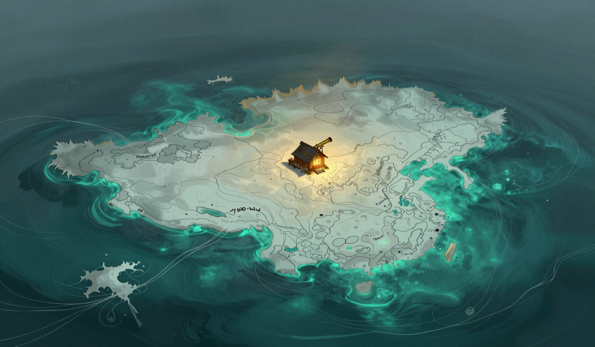

Two Gauges, One Sentence
The stone is loose in the cat's path the way the stone is loose, and the page is in the log, in its place, and the third bell rang, and I was at the shelf, and the jar is full, the oil standing at the line, and I pour the jar into the store, and the store fell, and the fall is with the jar in it, and the cat lifts its head from the water the way the cat lifts its head, and the sea is glassy, patient.
The rope sang in the middle of the day, one note, and the note is a note the log has counted before, and the note sits in the log with the counted notes, and the jar is in the day and the note is in the day, and the two are in the same line of the log, and the two have never been in the same line before, and I put the jar and the note in the same sentence, and the convergence is logged as a fact.
The cat heard the jar and the note, and the cat went back to sleep, and the sleeping is in the log, and the log takes the sleeping for a ruling, and the ruling is the only commentary the day gets, and the cat is asleep at the water, and the cat does not say what it heard.

The drift moved two point three miles, and the sea is glassy, patient, and the store is three days, and the burn said four, and the jar filled at the third bell and was poured into the store, and the fall is with the jar in it, and the rope is at sixty-four, down from where it stood, and the rope sang, one note, and the note is a counted note, and there was a whale in the water, and the omen was logged, and the omen is that the Unraveling recedes one hand's width from the map's edge, and the receding is in the log.
The sentence is in the log, and the jar and the note are in the same sentence, and the cat is asleep, and the sleep is the ruling, and the line is one hand's width from where it stood, and I would rather the two gauges had a name for what they have in common, and the name is not in the log, and the stone is still loose in the cat's path, and I do not say the stone will be loose tomorrow.